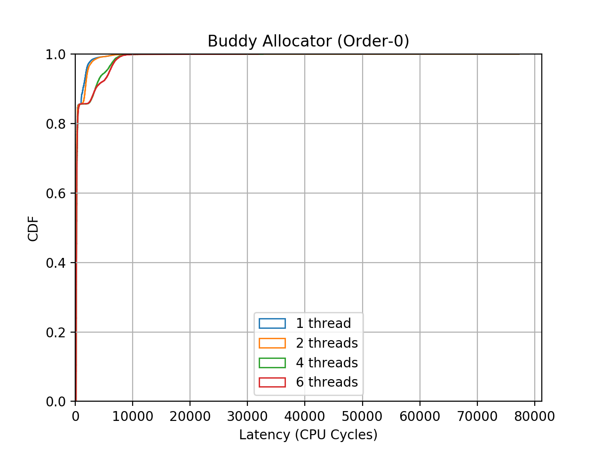
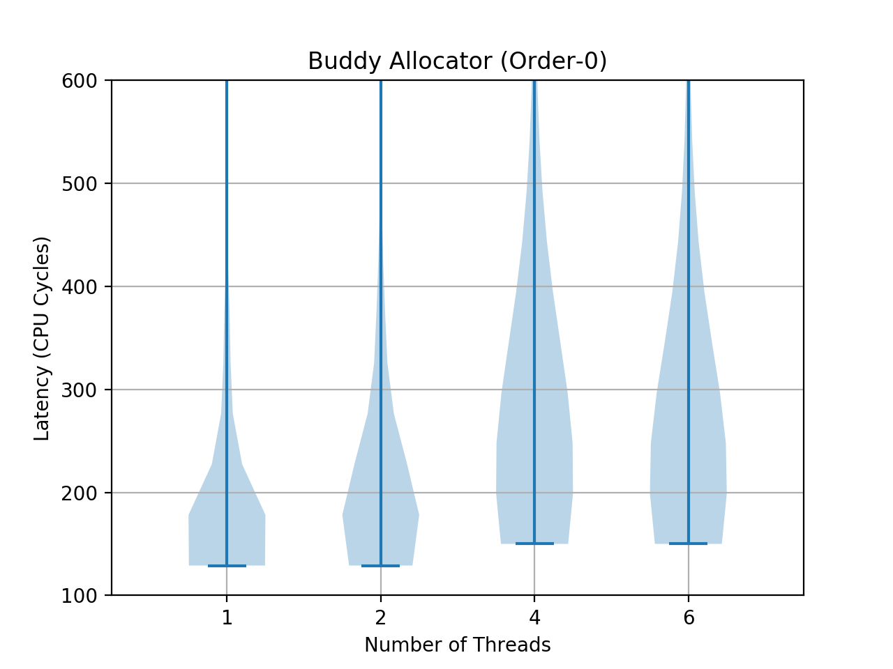

Jul 2019¶
0727 Sat¶
bug fixed, we need to do the “prep_new_page” before return the page back into our lists. Obviously, pages in our lists are in “allocated” state.
Okay. Eval perf also. Looks like the direct invocation of cb_alloc_zero_page is not good..
Although the perf stat show that using pgadvance help to reduce the handlemmfault overhead by 15%, the actual runtime is the same.. weird.
0726 Friday¶
Stuck at the BUG: bad mm counter and print_bad_pte.
Issues identified: looks like I must use pcp lists?
0725¶
HA. I leaned about perf lock, which requies a kernel with CONFIG_LOCKDEP and CONFIG_LOCK_STAT.
Not sure exactly how these options work, but they should insert some code inside each lock acquire and release.
Anyway, with perf lock, we are able to know what specific locks are hot. This is fantastic.
Note that normal perf record -e 'cycles:k' can tell use how much time is spent on spin_lock,
but it does not say how much time each specific lock uses. Cool.
Ah, side note, make nconfig is really powerful!! Even though I’ve been playing with Linux
for many years, I haven’t actually played with linux config manually.
Tried once. Our spinlock for pgadvance list shouldn’t be the issue. Now disable it and reboot.
254 pg 252 nopg
37.140
0724¶
Bagel Day.
First replot the figrue, adding an avg/95P/99P figure.
Very long tails. Yeah!

Then tune page advance. The key is to find a not busy CPU. I’m first trying Round-Robin.
Try TF Cifar. First run without pgadvance, see how the first 100 step performs in different runs. They seem to be very stable.
1 2 3 4 5 6 7 | 1) step = 100 (167.432 sec) 2) step = 100 (168.021 sec) step = 200 (167.467 sec) 3) step = 100 (167.903 sec) |
DAMN. Forgot to turn off huge page.
Now use perf to make sure do_anonymous_page got enough cycles..
22/23 down, no pgadvance, 163, 161, 161 22/23 down, no pgadvance, no perf, 159
0723¶
11:59pm
End of day. Learned how to plot Violin. Very long tail, and does not scale well even with PCP opt!
 
9pm
I’m using my own benchmark to measure buddy allocator. I’m testing order-0 alloc performance. Something weird happen during test. The 16th line is very costly. And after that, suddenly the perf improves nealy 50%. I’m reporting CPU cycles, CPU frequency change shouldn’t matter, right?
Linux has Per-CPU Pages (pcp), which is intended to optimize 0-order allocation. In my test case, each CPU keep 7 free pages. The patten is reflected in the measurement. Note that, the refill is sync.
1 2 3 4 5 6 7 8 9 10 11 12 13 14 15 16 17 18 19 20 21 22 23 24 25 26 27 28 29 30 31 32 33 34 35 36 37 38 39 | """ (latency in CPU cycles. 2.4GHz Xeon E5 v3) """ ... [ 1043.789257] idx=11956 order=0 latency=3128 [ 1043.789257] idx=11957 order=0 latency=376 [ 1043.789258] idx=11958 order=0 latency=376 [ 1043.789258] idx=11959 order=0 latency=368 [ 1043.789258] idx=11960 order=0 latency=376 [ 1043.789259] idx=11961 order=0 latency=400 [ 1043.789259] idx=11962 order=0 latency=384 [ 1043.789260] idx=11963 order=0 latency=3080 [ 1043.789260] idx=11964 order=0 latency=408 [ 1043.789260] idx=11965 order=0 latency=400 [ 1043.789261] idx=11966 order=0 latency=392 [ 1043.789261] idx=11967 order=0 latency=360 [ 1043.789262] idx=11968 order=0 latency=360 [ 1043.789262] idx=11969 order=0 latency=376 [ 1043.789262] idx=11970 order=0 latency=2992 [ 1043.789263] idx=11971 order=0 latency=29930 [ 1043.789263] idx=11972 order=0 latency=171 [ 1043.789264] idx=11973 order=0 latency=156 [ 1043.789264] idx=11974 order=0 latency=177 [ 1043.789264] idx=11975 order=0 latency=174 [ 1043.789265] idx=11976 order=0 latency=174 [ 1043.789265] idx=11977 order=0 latency=1419 [ 1043.789265] idx=11978 order=0 latency=156 [ 1043.789266] idx=11979 order=0 latency=174 [ 1043.789266] idx=11980 order=0 latency=171 [ 1043.789267] idx=11981 order=0 latency=171 [ 1043.789267] idx=11982 order=0 latency=171 [ 1043.789267] idx=11983 order=0 latency=156 [ 1043.789268] idx=11984 order=0 latency=1362 [ 1043.789268] idx=11985 order=0 latency=174 [ 1043.789269] idx=11986 order=0 latency=168 [ 1043.789269] idx=11987 order=0 latency=156 [ 1043.789269] idx=11988 order=0 latency=168 [ 1043.789270] idx=11989 order=0 latency=174 [ 1043.789270] idx=11990 order=0 latency=171 [ 1043.789270] idx=11991 order=0 latency=1266 ... |